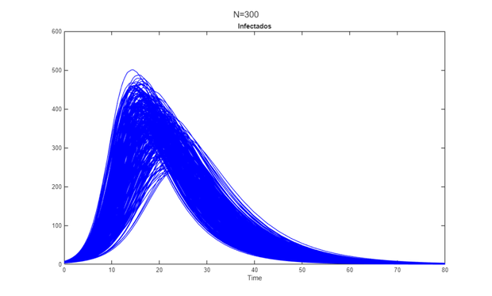
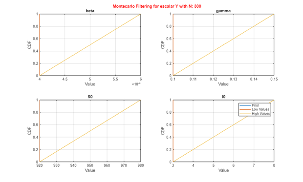
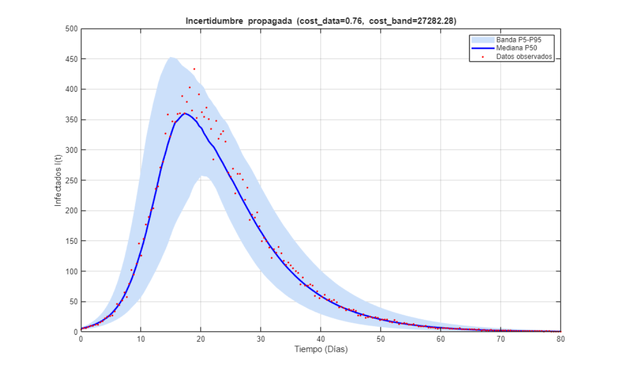
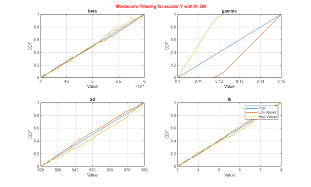

Contents
- 1. Configuración del Entorno
- 2. Definición del Modelo SIR (salida objetivo: Infectados)
- 3. Datos "observados" sintéticos (verdad conocida + ruido)
- 4. Muestreo del Espacio de Incertidumbre
- 5. Análisis de Incertidumbre (propagación Monte Carlo)
- 6. Banda de Percentiles y Métricas de Cobertura
- 7. Filtrado Monte Carlo (MCF): combinaciones aceptables vs. no aceptables
- 8. PREGUNTAS Y EJERCICIOS PARA EL ESTUDIANTE
% DEMO_03_INCERTIDUMBRE Análisis de Incertidumbre y Filtrado Monte Carlo % Curso guiado de GSUA-CSB % % Propagamos la incertidumbre de los factores (parámetros + condiciones % iniciales) hacia la salida del modelo y evaluamos: % - el ENSAMBLE de trayectorias (gsua_ua), % - la BANDA de percentiles P5/P50/P95 y su métrica de cobertura (gsua_covmetric), % - el FILTRADO Monte Carlo que separa combinaciones "aceptables" de las que no % lo son (gsua_MCF). % % Modelo de trabajo: SIR continuo del Módulo 01, observando la curva de Infectados.
1. Configuración del Entorno
clc; clear; close all; % --- Localización portable de la toolbox GSUA-CSB (ver Módulo 01) ----------- if isempty(which('gsua_dataprep')) candidatos = { fullfile(fileparts(mfilename('fullpath')), '..', '..', '..', 'Functions') % dentro del repo clonado fullfile(getenv('USERPROFILE'), 'MATLAB Drive', 'Toolbox', 'Functions') fullfile(getenv('USERPROFILE'), 'Documents', 'MATLAB', 'GSUA-CSB', 'Functions') }; for k = 1:numel(candidatos) if isfolder(candidatos{k}), addpath(candidatos{k}); break; end end if isempty(which('gsua_dataprep')) error(['No se encontró la toolbox GSUA-CSB en el path de MATLAB. ' ... 'Instala GSUA-CSB.mltbx o añade su carpeta Functions con addpath(...).']); end end % El modelo SIR se reutiliza del Módulo 01 (ruta relativa a este script). model1_path = fullfile(fileparts(mfilename('fullpath')), '..', '..', ... '01_Introduccion_Modelos', 'matlab'); if isfolder(model1_path), addpath(model1_path); else, error('Falta el Módulo 01 en %s', model1_path); end fprintf('=========================================================================\n'); fprintf(' MÓDULO 03: ANÁLISIS DE INCERTIDUMBRE Y FILTRADO MONTE CARLO \n'); fprintf('=========================================================================\n\n');
========================================================================= MÓDULO 03: ANÁLISIS DE INCERTIDUMBRE Y FILTRADO MONTE CARLO =========================================================================
2. Definición del Modelo SIR (salida objetivo: Infectados)
Rangos "previos" acotados alrededor del valor real (± ~20%). A propósito son más estrechos que en el Módulo 02: aquí no exploramos el muestreo, sino que propagamos una incertidumbre plausible para ver cuánta variabilidad induce en la salida.
ranges_sir = [
4.0e-4, 6.0e-4; % beta (tasa de transmisión)
0.10, 0.15; % gamma (tasa de recuperación)
920, 980; % S0 (susceptibles iniciales)
3, 8 % I0 (infectados iniciales)
];
[T, ~] = gsua_dataprep('sir_continuous_userdefined', ranges_sir, ...
'domain', [0, 80], ...
'names', {'beta', 'gamma', 'S0', 'I0'}, ...
'out_names', {'Susceptibles', 'Infectados', 'Recuperados'});
% Seleccionamos la salida a analizar. En una tabla GSUA esto se hace fijando la
% propiedad 'output' (equivalente a model.set_output(...) en Python).
T.Properties.CustomProperties.output = 2; % 2 = Infectados
xdata = linspace(0, 80, 200);
Setting environment to work with user-defined function
3. Datos "observados" sintéticos (verdad conocida + ruido)
Para poder medir cobertura necesitamos datos. Generamos una curva "real" con un conjunto de parámetros verdadero y le añadimos ruido de medición del 8%.
true_par = [0.0005; 0.12; 950; 5]; % beta, gamma, S0, I0 y_true = gsua_eval(true_par, T, xdata, [], false, false, false); % (1 x 200 x 1) y_true = squeeze(y_true).'; % 1 x 200 (fila) rng(7); % reproducibilidad ydata = y_true .* (1 + 0.08 * randn(size(y_true))); % ruido multiplicativo 8%
4. Muestreo del Espacio de Incertidumbre
N = 300; M = gsua_dmatrix(T, N, 'Method', 'LatinHypercube'); % 300 muestras del hipercubo
5. Análisis de Incertidumbre (propagación Monte Carlo)
gsua_ua evalúa el modelo en cada fila de M y abre las figuras estándar de la toolbox (ensamble + filtrado Monte Carlo). Desactivamos el paralelismo para no depender del Parallel Computing Toolbox en clase; en un estudio grande conviene 'parallel', true.
Y = gsua_ua(M, T, 'xdata', xdata, 'ynom', ydata, 'parallel', false, 'verbose', false); % Y es (N x 200): una trayectoria de Infectados por cada muestra.


6. Banda de Percentiles y Métricas de Cobertura
gsua_covmetric resume el ensamble en una banda P5/P50/P95 y entrega dos costos normalizados (un valor < 1 significa "dentro de la tolerancia"): cost_data -> ¿la mediana de la banda sigue a los datos? (exactitud/alcanzabilidad) cost_band -> ¿es angosta la banda P5-P95? (precisión/convergencia)
[cost_data, cost_band, P5, P50, P95] = gsua_covmetric(Y, ydata, 'margin', 0.1); fprintf('\n--- Métricas de cobertura (margen 10%%) ---\n'); fprintf('cost_data = %.3f (exactitud: mediana vs datos)\n', cost_data); if cost_data < 1 fprintf(' -> Los datos SON alcanzables por el modelo dentro de los rangos actuales.\n'); else fprintf(' -> Los datos NO son alcanzables: revisa rangos o estructura del modelo.\n'); end fprintf('cost_band = %.3g (precisión: ancho de la banda P5-P95)\n', cost_band); if cost_band < 1 fprintf(' -> La banda ya es angosta: la incertidumbre está acotada.\n\n'); else fprintf(' -> La banda es ancha (es normal que sea >>1 con una previa sin ajustar;\n'); fprintf(' el Módulo 05 la reduce estimando los parámetros con datos).\n\n'); end % Gráfica propia de la banda de incertidumbre frente a los datos figure('Name', 'Banda de Incertidumbre P5-P50-P95'); fill([xdata, fliplr(xdata)], [P5, fliplr(P95)], [0.80 0.88 0.98], ... 'EdgeColor', 'none', 'DisplayName', 'Banda P5-P95'); hold on; plot(xdata, P50, 'b-', 'LineWidth', 2, 'DisplayName', 'Mediana P50'); plot(xdata, ydata, 'r.', 'MarkerSize', 7, 'DisplayName', 'Datos observados'); xlabel('Tiempo (Días)'); ylabel('Infectados I(t)'); title(sprintf('Incertidumbre propagada (cost\\_data=%.2f, cost\\_band=%.2f)', cost_data, cost_band)); grid on; legend('Location', 'northeast');
--- Métricas de cobertura (margen 10%) ---
cost_data = 0.760 (exactitud: mediana vs datos)
-> Los datos SON alcanzables por el modelo dentro de los rangos actuales.
cost_band = 2.73e+04 (precisión: ancho de la banda P5-P95)
-> La banda es ancha (es normal que sea >>1 con una previa sin ajustar;
el Módulo 05 la reduce estimando los parámetros con datos).

7. Filtrado Monte Carlo (MCF): combinaciones aceptables vs. no aceptables
gsua_MCF separa las corridas cuyo acumulado queda por debajo/encima del dato observado y compara la distribución de cada parámetro en cada subconjunto. Cuando un parámetro "importa", sus distribuciones low/high se separan.
[Jsup, Jinf] = gsua_MCF(T, M, Y, ydata); fprintf('Filtrado Monte Carlo: %d corridas por debajo y %d por encima del acumulado observado.\n\n', ... numel(Jinf{1}), numel(Jsup{1}));
Filtrado Monte Carlo: 183 corridas por debajo y 117 por encima del acumulado observado.

8. PREGUNTAS Y EJERCICIOS PARA EL ESTUDIANTE
fprintf('=========================================================================\n'); fprintf(' PREGUNTAS DE ANÁLISIS Y EJERCICIOS DOCENTES (MÓDULO 03) \n'); fprintf('=========================================================================\n'); fprintf('1. Sube el ruido de 8%% a 25%%. ¿Cómo cambian cost_data y cost_band?\n'); fprintf('2. Reduce el rango de beta a la mitad. ¿La banda P5-P95 se vuelve más angosta?\n'); fprintf('3. En las gráficas de MCF, ¿qué parámetro separa más sus curvas low/high? ¿Por qué?\n'); fprintf('4. ¿Puede cost_band ser bajo (banda angosta) y cost_data alto a la vez? ¿Qué significaría?\n'); fprintf('=========================================================================\n\n');
========================================================================= PREGUNTAS DE ANÁLISIS Y EJERCICIOS DOCENTES (MÓDULO 03) ========================================================================= 1. Sube el ruido de 8% a 25%. ¿Cómo cambian cost_data y cost_band? 2. Reduce el rango de beta a la mitad. ¿La banda P5-P95 se vuelve más angosta? 3. En las gráficas de MCF, ¿qué parámetro separa más sus curvas low/high? ¿Por qué? 4. ¿Puede cost_band ser bajo (banda angosta) y cost_data alto a la vez? ¿Qué significaría? =========================================================================